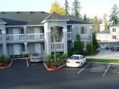
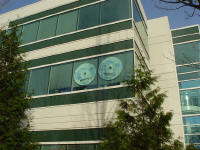
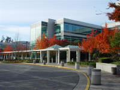
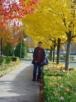
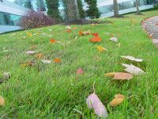
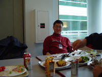
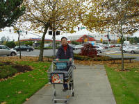

I am living in the Homestead Village, the self service inn just beside the
Microsoft campus. It is only one road away (NE 28th St) from building 27. The
house above is seen from the window of my room. It should be the 4th building of
Homestead.

This is the building 26, where Windows Media team now stays. I saw the two big
disks hanging on the window. They are the release signing disk for Windows 2000
Server and Windows 2000 Advanced Server. I remember they were hanging in the
lobby of the building before. It is also another most memorable I saw on campus.

It is mid-Nov and the leafs on the maple trees has completely turned burning
red. The campus looks fantastic with all the trees.

Some of the leafs has become light yellow. Look at the leafs. The color are so
pure and I really enjoy the scene there.

The temperature rises a little bit recently. The maple leafs - some are and some
are not - falling to the grass land. The greenish windows are the building 8.

There is nothing to eat and with the serious jet lag, I cannot eat anything. So
I only bought a piece of fried chicken at $5.99 and some orange juice. Bad
lunch, I have to say. It is interesting to see different people treat the same
food differently. The Americans like this kind of food?

Every time I bring a laptop with me, the incompatible plug specification is a
big problem. It is not a problem of voltage. Most laptop converters accept 100 -
240V. I have to go everywhere to find a converter that convert the China plug to
US power outlet. I was wandering near Seals with the shopping cart. Finally, my
conclusions are:
Posed before the Windows WHQFest 2002 banner in building 26. I love the printed,
colorful, and simple communication methods like banners, posters, and t-shirt
very much.
Stay tuned
I have a lot of photos and interesting stories about the trip. But I am badly lack of time to write it down. Will get more stuff later. Thanks for your attention.
{kind=link}
{kind=link}
{kind=link}
{kind=link}
{kind=link}
{kind=link}
{kind=link}
{kind=link}